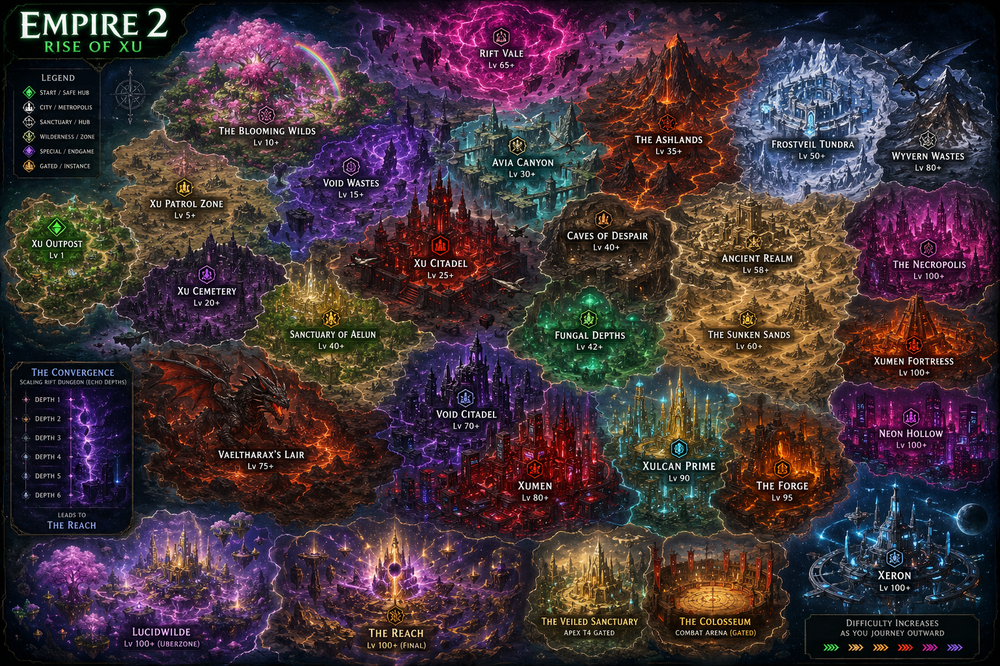

The World of Xu
All 30 zones, from the Xu Outpost to The Reach. Difficulty climbs as you journey outward from the safe green heartland into the Xu war-cities, the dimensional rifts, and the post-cap endgame.

Tap the map to open it full size
So you woke up in the Xu war
A complete guide for first-time players: what to do, where to go, what every button does, and how not to die in your first ten minutes.
Table of Contents
- Getting Started
- Pick Your Class
- Pick Your Race
- Controls You Need to Know
- Reading Your HUD
- Your First 10 Minutes
- Combat Basics
- Skills & the Loadout
- Leveling & Progression
- Items, Gear & Rarity
- Zones & Where to Go Next
- Bosses (and Surviving Them)
- Multiplayer Co-Op
- PvP in the Colosseum
- Pro Tips New Players Miss
- FAQ & Troubleshooting
01 · Getting Started
Empire 2: Rise of Xu is a real-time action RPG. You play a soldier dropped into a war-torn alien world, and your job is to fight, loot, level up, and eventually take down the bosses keeping the Xu empire in power. You see your character from a third-person camera: move with WASD, aim with the mouse, roll with Space, press numbers to cast skills.
Click PLAY NOW on the homepage, choose Play Online and create an account, pick a class and race, and you're in. The whole thing runs in your browser, on a computer, phone or tablet. Online characters are saved on the server and load on any device; Play Offline keeps characters on the device you are using, for solo play.
A new character skips the intro and starts with what Boot Camp hands out: 600 gold, your class weapon at +3, your class skill and potions. Want the walkthrough? REPLAY TUTORIAL in Help (H) or Settings plays it: Captain Oryn in the Outpost covers the camera, movement, attacking, rolling out of red ground telegraphs, potions, loot, equipping, buying a skill and taking a quest.
02 · Pick Your Class
Class is the biggest decision you make at character creation. There are four, and they play very differently. You can always make alts later.
⚔ Warrior
Melee · Tank · EasyBig HP, big sword, big numbers. Walk up to things and hit them until they fall over. Wields greatswords and one-handers, and is the only class that can ready a parry (Counter Strike). The recommended class for first-time players.
🔮 Mage
Ranged · Glass Cannon · MediumSquishy but devastating at range. Throws bolts, calls down lightning, freezes packs. Staves and other magic weapons, scaling with INT. If you like dodging more than tanking, this is your class.
✨ Healer
Hybrid · Support · MediumHeals, shields and holy damage, scaling with INT. Great solo and indispensable in co-op, where your heals reach the party.
🗡 Rogue
Burst · Mobile · HardHighest single-target burst, lowest HP. One-handed blades, quick in and out. Rewarding once it clicks but unforgiving against bosses.
First playthrough: Warrior. Big HP pool gives you breathing room to learn the systems.
03 · Pick Your Race
After you pick a class, you pick a race. There are 8 races, each with four traits. Four of them also carry an active ability you fire with E; the rest are passive.
The races (full details on the Races tab):
- Xu — E Crest Flare: nearby enemies flee in fear (60s cooldown). Tough scales, and hits harder below 30% HP.
- Vampire — E switches your drain between LIFE and MANA. Melee lifesteal, but weaker in bright zones (Aether Light).
- Minotaur — E Vreth Stance: root in place for 8s with 50% damage reduction and 30% reflect (45s cooldown). Stronger heals, too.
- Ogre — E War Chant: +25% attack speed aura for 8s (30s cooldown). Thick hide, slowest race.
- Human — Bonus XP, shorter cooldowns, and can equip any weapon. Safe pick.
- Centaur — Fastest race. Passive Charge: run straight for 3s and your next melee hit deals +200%. Can't wear heavy chest or legs.
- Elf — Cheaper spells and +30% magic damage, but low physical defence.
- Gnome — An automaton companion fights beside you, +25% skill damage and vendor discounts, but the lowest HP.
For your first character, Human or Xu are the easiest to play. The Races tab lists every trait exactly as the game shows it.
04 · Controls You Need to Know
You don't need to memorize everything. These are the ones that matter (full list on the Controls page):
Movement & Combat
- W A S D
- Move your character
- Mouse
- Aim — your character faces wherever your cursor is
- LMB
- Basic attack (auto-repeats while held)
- RMB
- Hold to block with a shield, or fire the bow or gun in your off-hand
- Space
- Dodge roll — you're untouchable mid-roll. The answer to red telegraphs on the ground.
- E
- Racial ability (Xu, Vampire, Minotaur, Ogre)
- F
- Talk to NPCs, use crafting benches and shops, harvest gem nodes
- T
- Deploy or eject your mech suit (level 60+, see the Mechs & Skycars tab). In a mech, LMB fires its main gun and 1–8 become its weapons.
- B
- Board or land your skycar
Skills
- 1 – 8
- Cast the skill in that slot
- K
- Skill loadout (drag skills onto slots)
- N
- Talent tree (opens at level 5)
- J
- Ascendancy (level 100)
- U
- Fire your slotted Ascendancy active (Shift+U / Ctrl+U for the 2nd and 3rd)
Consumables (Item Bar)
- Z X C V
- Item bar slots — drag potions and other consumables here from your inventory, then press the matching key to use
Menus
- I
- Inventory — gear, consumables, lightstones. Sort it by Power to see your best pieces first
- Q
- Quest log (its DIALOGUE tab re-reads conversations you missed)
- P
- Stat points (STR / VIT / AGI / INT / DEF)
- Y
- Achievements — or, standing next to another player, a trade request
- L
- Stats & leaderboard
- G
- Guild panel
- M
- World map — this zone in detail, or every zone and the gates between them (mute is in Settings)
- H
- Help — controls reference, Replay Tutorial and the Field Manual
- Esc
- Close menus / pause and settings
- F5
- Save now (the game also saves automatically)
05 · Reading Your HUD
Top Bar
One strip across the top of the screen: your avatar, name, class and title, HP and MP bars with numbers, your level with your G beside it, your experience, your Power, a compass, unspent stat and talent points, gold (◇) and Echo Shards (💎, earned in The Convergence). On the right: the current zone name and timer.
Bottom — Skill Bar
Eight numbered slots (1–8) for your equipped skills. Cooldowns sweep across the icon. If your race has an active, its slot sits beside the bar — press E.
Bottom — Item Bar
Four slots labeled Z X C V for consumables. Drag health potions, mana potions, scrolls or food into them from your inventory, then press the key.
Minimap
Shows your zone, marked north, east, south and west. You're the dot in the center; enemies, portals and points of interest appear as colored markers. Navy diamonds are Delves; inside one, a map of the Delve takes the minimap's place. Press M for the full world map.
Chat Panel
Combat log, loot pickups, level-ups, boss messages and multiplayer chat. Resize it with the S/M/L buttons or hide it.
06 · Your First 10 Minutes
- Spawn in the Xu Outpost. The safe hub — no enemies, full of NPCs. The fountain restores health and mana while you stand near it.
- Buy your first skill. Your class trainer sells skills. Buy one, then press K and drag it onto a number slot.
- Take a quest from a quest giver (F), then check it in the quest log (Q).
- Head out the east gate into the Xu Patrol Zone.
- Kill a few weak mobs. Hold LMB. When red appears on the ground, roll out of it with Space.
- Loot. Items glow on the ground. Walk over them to pick up. Gold is automatic.
- Level up. Each level gives you 3 stat points. Press P and spend them: VIT for HP plus your damage stat (STR for Warrior and Rogue, INT for Mage and Healer).
- Press I. Equip anything better than your starter gear: bag tiles mark upgrades with an arrow, and every tooltip says how much Power the piece would add or cost.
- Keep pushing. When the Patrol Zone stops feeling dangerous, head for the Blooming Wilds (Lv 10+).
Don't run into the middle of a pack of 5+ enemies on a fresh character. Pull one or two at a time. If your HP drops below half, back off and use a potion from your item bar (Z/X/C/V).
07 · Combat Basics
The Combat Loop
Empire 2 is real-time. You're always free to move while attacking, blocking or dodging:
- Aim with the mouse — your character faces the cursor
- Walk into range (melee) or stay back (ranged)
- Hold LMB to auto-attack
- Press Space to roll out of red telegraphs on the ground
- Press 1–8 to cast skills when off cooldown
- Hold RMB to block with a shield when you can't roll in time
Monsters Fight Back
Most creatures have abilities of their own — charges, leaps, bursts, projectiles — not just a swing. Every creature's abilities and drops are on its card in the Bestiary. A slain creature returns 5 minutes later.
Crits & Combos
Critical hits show with a ! on the number. Hits in quick succession build a combo: at x3 you deal +15% damage, at x6 +30%, at x10 +50% with a screen shake. Stop hitting and it fades.
Status Effects
You can burn, poison, freeze, shock, stun or bleed enemies. Stunned enemies stand still — free hits. Frozen enemies can't move. Burning enemies take damage over time.
08 · Skills & the Loadout
There are 75 skills across the four classes. You buy them from your class trainer as you level and put them on the 8-slot bar (keys 1–8).
How to Equip a Skill
- Press K to open the skill loadout
- Drag a skill onto a slot, or click the skill then click a slot
- Close the panel (Esc) — the slot now responds to that number key
Mana Cost & Cooldown
Each skill costs MP and goes on cooldown after you cast it. Mana regenerates over time; INT raises your max MP.
Choosing Skills Early
- One AOE skill for pack clearing
- One single-target burst for elites and bosses
- One mobility skill if your class has one
- One defensive skill (heal, shield, damage reduction)
Full skill catalog on the Skills tab.
09 · Leveling & Progression
You progress on three tracks: character level (and the G it puts you in), talents and, at the top, Ascendancy.
Character Level (XP)
Kill enemies, finish quests, gain XP. Every level you get:
- More HP and MP
- 3 stat points to spend (P)
- New skills available from your class trainer
Stat Points — Where to Spend Them
- STR — +4 ATK per point (Warrior and Rogue)
- VIT — +15 max HP per point (everyone)
- AGI — +3% speed per point (movement and attack speed)
- INT — +8 max MP per point; magic weapons and heals scale with it (Mage and Healer)
- DEF — +3% defence per point (damage reduction)
G Levels
Every ten levels is a G: G1 up to level 9, G2 from level 10, G3 from level 20, and so on to G11 at level 100 and beyond. Your G shows beside your level, and gear, portals, the zone banner, the travel map and the world map all carry a G too. If something is your G, it is on your level. The experience readout counts the levels to your next G, and crossing into one gets its own banner.
Power
Power is one number for how strong your character is, worked out from how hard you hit and how much you can take. It shows on the status bar, the character sheet and the bag. It is there to compare gear and builds; it changes nothing in combat. It climbs with the whole game: about 5,000 by the end of G1, 100,000 in G5, a million in G8 and a billion in G11, and your character sheet (P) shows whether you are below, around or above the typical Power of your G.
Talent Tree (N)
Opens at level 5. 48 talent nodes per class (192 in all) — 8 branches of 6. Talents are where your build happens: lifesteal, cooldown reduction, crit damage, elemental specialization and more. You can respec, so try things.
Ascendancy (J)
At level 100 your XP starts earning Ascendancy points: 26 nodes of big passive bonuses and actives you fire with U.
10 · Items, Gear & Rarity
There are 1,486 items in the game. They drop from creatures, bosses and Apex Trials, and come from crafting and shops. Rarity goes:
- Common and Uncommon — early basics
- Rare (blue) — solid mid-game gear
- Epic (purple) — strong, often with a unique effect
- Legendary (orange) — boss sets and endgame staples
- Mythic — rare, build-defining
- Convergent — from The Convergence
- Stormforged — the Overseer of Discord's set
- Geometric — the apex tier, from Convergence Depth 4 and deeper and the Keeper of the End
Gear and G
Every piece of gear belongs to a G, and you can wear it from the first level of that G: G2 gear at level 10, G3 gear at level 20. Reaching a new G opens all of its gear at once. Gear is sized by its slot, its G and its rarity, so a higher G beats a lower one of the same rarity, and a piece is worth the same to every class. The Items tab shows each piece's G and level.
Equipment Slots
Weapon, off-hand (shield, bow or gun), helm, chest, legs, boots, ring and amulet. Every armour piece changes how your character looks. Lightstones and gems socket into gear for bonus effects.
Boss Sets
Every boss drops a full set of its own — a greatsword, a one-hander, a staff, a ranged weapon, helm, chest, legs, boots, ring and amulet — and weapons you can wield come up far more often than ones you can't. Each boss card on the Bosses tab lists its set and the chance of every piece. On top of those there are 22 named sets with 2- and 4-piece bonuses, including the five Delve sets, which come in every G from 1 to 11 and add a 6-piece bonus (Sets tab).
Crafting
75 recipes across the Weaponsmith, Armourer, Jeweller and Alchemist benches in the Outpost. Press F at a bench. Materials drop from creatures in zone-specific patterns.
11 · Zones & Where to Go Next
There are 32 zones. Each has its own creatures, environment, boss and loot. The levels below are where each zone starts warning you:
- Xu Outpost — your safe hub. Always returnable.
- Xu Patrol Zone (Lv 5) → The Blooming Wilds (10) → Void Wastes (15) → Xu Cemetery (20) → Xu Citadel (25)
- Avia Canyon (30) → The Ashlands (35) → Caves of Despair (40) → Fungal Depths (42)
- Frostveil Tundra (50) → Ancient Realm (58) → The Sunken Sands (60) → Vaeltharax's Lair / Rift Vale (65) → Void Citadel (70)
- Wyvern Wastes / Xumen (80) → Xulcan Prime (90) → The Forge (95)
- Level 100+: The Necropolis, Xumen Fortress, Neon Hollow, The Reach, Lucidwilde and The Convergence
- Level 110: Xeron (every piece of gear that drops there is Xeron-Forged: +25%) and The Veiled Sanctuary
- Level 120+: The End, beyond the Keeper of the End: no edge, made new every visit
- The Colosseum — the PvP arena (see below).
Every zone has a G as well (Lv 5 is G1, Lv 10 is G2, Lv 25 is G3, Lv 100 and up is G11), shown on its portal and on the map. If a zone warns you that it's above your level, trust it. Each zone's boss is on the Bosses tab.
The Convergence (Lv 100)
A bottomless maze, one depth after another. Each depth has its own creatures and its own boss — the Depth Sentinel, the Depth Inferno, the Archon, Xerathor, the Overseer of Technology and the Forest Ancient — and a portal down when the boss dies. Modifiers stack as you go deeper.
Delves
Every combat zone holds one Delve behind a navy blue portal at a random spot; it shows on your minimap only once you have explored there. Each is a fresh maze in the zone's wall style, with four creatures of its own and a sealed boss chamber: kill half the creatures inside to break the seal. The boss drops pieces of a Delve set in your zone's G. Leaving asks first: the green portal or LEAVE DELVE, then F or Enter to go, Esc to stay.
Bofocat
Bofocat, the grey tabby of the XU Outpost, wants a tuna (F next to her). Fish one from the Blooming Wilds river at the ripples, bring it to her and she trusts you: pet her, or hire her to follow you and fight. Only one player per game can have her.
Apex Trials
Kill enough in a zone and a hot-pink Apex portal can open. Inside: three rooms and a boss with its own set, at a tier that follows the zone's level (I to VIII).
12 · Bosses (and Surviving Them)
There are 69 bosses: a boss for every combat zone, the six Convergence depth bosses, seven roaming world bosses, rare spawns, the eight Apex Trial bosses, ten Delve bosses and the six bosses of The End. World bosses appear every 5 minutes after the first and anyone in the zone can join in.
How to Not Die
- Watch the telegraphs. Red on the ground = an attack about to land. Move out before it fills.
- Roll with Space. You're untouchable mid-roll.
- Stay mobile. Standing still in a boss fight is a death sentence.
- Save your big skills. AOE for adds, single-target burst on the boss.
- Stock potions on your item bar before the fight.
Phases
Most bosses change at HP thresholds and bring out new attacks. Watch for screen shake and visual changes.
Loot
Zone bosses and world bosses always drop two different pieces of their own full set per kill, with a 45% chance of a third. Rare spawns drop one piece, with a 45% chance of a second. Weapons for your class are the likeliest weapon drop.
Don't fight a boss while under-leveled. Being 5 levels below is usually a wipe.
13 · Multiplayer Co-Op
Host a game from the lobby, or join one. Everyone in the session shares the same live world: every combat zone is running on the server, so creatures are already there when you arrive.
How It Works
- Other players in your zone are real people
- World boss kills give credit to everyone who took part
- Trade with Y while standing next to another player
- Chat in the bottom-left chat panel
- Form a guild (G)
- If your connection blips, you rejoin the same session automatically; if the session itself is gone, the game quietly opens a new one and you keep playing
Etiquette
- Don't drag a giant pack onto someone solo-farming
- World boss spawns — let everyone who showed up get a hit in
14 · PvP in the Colosseum
The Colosseum is a dedicated PvP arena. Dying to another player there respawns you in the arena with no penalty.
The Colosseum is also where the Overseer of Discord world boss can appear — and any other players in the arena can attack you while you're fighting it. Risk and reward.
Dying to the Overseer of Discord (not to a player) is a normal death, with the normal penalty. Only dying to another player uses the no-penalty arena respawn.
15 · Pro Tips New Players Miss
- Roll, don't tank. You're untouchable mid-roll. Practice on small mobs first.
- Blocking reduces damage but doesn't make you invincible. Big telegraphed attacks should still be rolled.
- Read the bestiary. Every creature card lists its abilities and what it drops.
- Boss cards show exact drop chances for every piece of the boss's set, including the chance for your class.
- Every kill can drop gear. 12% of kills drop a piece rolled for the zone: from ten levels below it up to the end of the zone's own G.
- Talent respec is possible. Don't agonize over your first choices.
- Don't sell crafting materials by accident. Recipes need them.
- The Convergence is the real endgame. Every depth has new creatures, a new boss and new set gear.
16 · FAQ & Troubleshooting
Is this free?
Yes. Just play in your browser.
Can I save my character?
Yes — online characters are saved to your account on the server, so clearing your browser won't wipe them, and they load on any device. Offline characters are saved on your device; move one to another device with a transfer code, or bring it into your account with Import Old Character on character select. The game saves automatically; F5 saves on the spot.
Why am I lagging?
Lower the graphics settings (Esc → settings). Shadows, particles and bloom cost the most. Chrome tends to perform best.
Can I play with my friend?
Yes — one of you hosts a game from the lobby and the other joins it. You both need online characters (Play Online); offline characters are for solo play.
Is there controller support?
Yes, the game supports gamepads. See the Controls page.
I died and lost stuff. What happened?
Dying outside the arena costs 15% of your gold and some XP toward your next level, and sends you back to the Outpost. Your gear stays equipped.
Where do I report a bug?
Find the dev (Bofis) on itch.io — comments on the game page are read.
⚡ World Bosses
Ephemeral · Cross-zone · Shared loot · Multi-player
💀 Lair Bosses
Zone-locked · Phase-shifting · Per-player rewards
✦ Rare Spawns
Roaming · One at a time · Every 4–10 minutes in their zones · HP rises with the zone
🌀 Apex Trial Bosses
One per tier · Found at the end of an Apex Trial · A clear pays 2 pieces of the boss's own set (3 with 2+ modifiers or Cursed), plus zone gear
◆ Delve Bosses
One for each of the ten wall styles · Behind the sealed chamber at the heart of every Delve · Three phases · Health follows the zone
✦ Bosses of The End
Six of them, one at a time, in a new order every visit · Each one after the first has 15% more health · Drops Endborn gear
⚜ Ascendancy
Once you hit level 100, all further XP routes to Ascendancy. Earn AA points to unlock universal nodes (available to every class) or class-exclusive nodes tailored to your build. Each node has a required AA total before it is unlockable and costs points to take.